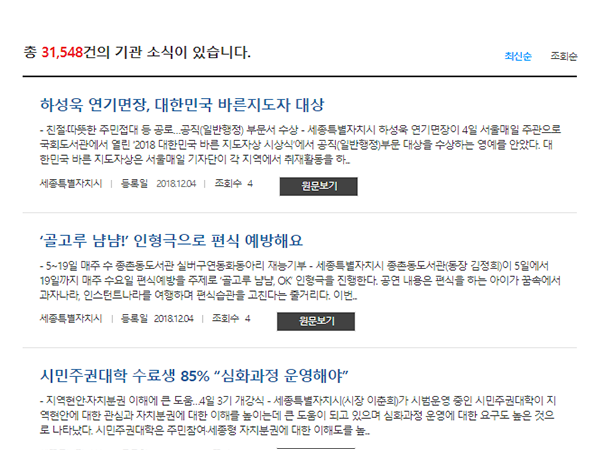
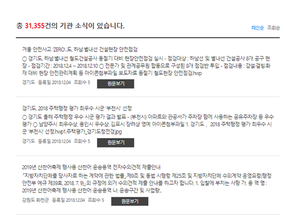
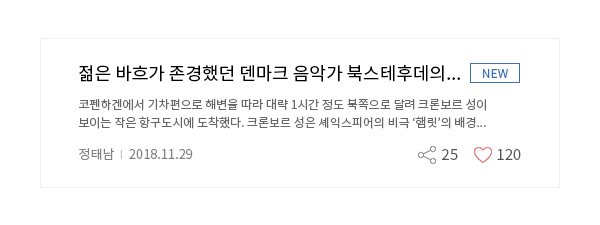
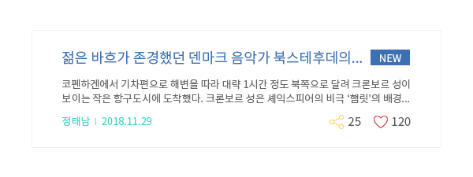

콘텐츠
콘텐츠는 웹 페이지에 표현되는 텍스트 또는 이미지, 소리, 영상 등의 미디어 정보를 의미한다. 사용자는 콘텐츠를 통해 웹사이트와 의사소통하기 때문에 콘텐츠를 효과적으로 전달할 수 있도록 설계해야 한다.
목록보기
목록은 텍스트 혹은 이미지를 연속적으로 배열한 색인이다. 목록의 항목 하위에 콘텐츠가 존재하는 경우, 상세 내용을 조회할 수 있도록 링크나 버튼이 포함될 수 있다. 목록은 정보 형태에 따라 문자정보를 통해 색인할 수 있는 텍스트형과 텍스트에 부가적으로 이미지를 활용하는 썸네일형으로 구분할 수 있다.
-
중요한 항목은 목록의 상단에 배치한다필수
사용자는 목록의 좌측 상단 영역에 먼저 주의를 기울인다. 그러므로 먼저 보여주어야 할 중요한 내용은 좌측 상단에 배치한다.
-
항목을 의미 있는 단위로 구분하고 논리적인 순서에 따라 정렬한다권장
논리적인 순서에 따라 정렬하면 사용자가 내용을 빠르게 훑어보고 쉽게 이해할 수 있다. 항목의 정렬에 표, 간격, 구분선, 배경색 등을 활용할 수 있다.
-
O권장사례

-
X피해야 할 사례

-
강조를 위한 시각적 표현을 과도하게 사용하지 않는다권장
색상, 아이콘 이미지를 적절하게 사용하면 사용자의 효율적인 정보처리를 도울 수 있지만, 지나치면 오히려 주의가 분산될 수 있다.
-
O권장사례

-
X피해야 할 사례

-
긴 목록은 페이지 등으로 단위를 나누어 제공한다권장
긴 목록은 페이지로 구분하는 등 적절하게 단위를 나누어, 한 번에 지나치게 많은 정보를 제공하지 않아야 한다. 긴 페이지를 스크롤하는 것보다 페이지네이션을 이용하여 분할된 페이지를 탐색하는 것이 더욱 효과적이다.
-
필터링 또는 검색 기능을 제공한다필수
항목 개수가 많은 경우, 페이지네이션만으로 정보를 탐색하는 데 한계가 있으므로 필터링이나 검색 기능을 제공하여 빠른 내용 탐색이 가능하도록 만들어야 한다.
-
정보 전달을 위해 아이콘 이미지를 사용하는 경우 대체 텍스트를 제공한다
공지사항, 새 게시글, 공유 등 정보를 표현하기 위해 사용되는 아이콘 이미지에는 적절한 텍스트를 제공하여 보조 기술 사용자가 이미지의 의미를 이해할 수 있도록 해야 한다.
-
첨부파일 아이콘 이미지에 적절한 대체 텍스트를 제공한다
목록에서 직접 다운로드 할 수 있는 첨부파일을 아이콘 이미지로 표시한 경우, 아이콘 이미지의 대체 텍스트는 정확한 첨부파일 명으로 제공해야 한다.
-
선택된 페이지네이션 링크는 명확하게 구분되도록 표현한다
사용자가 탐색 중인 페이지 정보를 알 수 있도록, 명확하게 명도가 대비되는 색상을 이용한 배경 색상 반전, 밑줄, 굵기, 기울임 등 다양한 속성을 이용하여 선택된 링크와 선택되지 않은 링크를 구분해야 한다.
콘텐츠 작성/업로드
콘텐츠 작성/업로드는 사용자가 의견을 개진하는 과정에서 사용하는 입력폼 패턴을 의미한다. 콘텐츠 작성이라는 과업은 사용자가 웹사이트 커뮤니티와 의사소통하는 매우 능동적인 과정이다. 사이트에 적극적으로 참여하고자 하는 사용자가 불편함 없이 의견을 표현할 수 있도록 사용하기 쉽게 설계해야 한다.
-
플레이스홀더를 이용하여 작성방법을 제공하지 않는다필수
입력필드 내부에 플레이스홀더로 제공된 텍스트는 키보드가 진입하면 사라지기 때문에, 필요한 시점에 정보를 활용할 수 없다. 그러므로 콘텐츠 작성에 관한 설명은 텍스트 형식으로 입력필드 상‧하단에 제공해야 한다.
-
버튼을 용도 및 기능을 기준으로 구분하여 표현한다필수
‘등록’ 버튼 이외에 ‘임시저장’, ‘취소’, ‘초기화’ 등 여러 개의 버튼을 제공하는 경우, 용도에 따라 버튼의 표현을 다르게 하여 사용자가 혼동하지 않도록 해야 한다. ‘취소’나 ‘초기화’ 등 주의를 요하는 버튼은 ‘등록’ 버튼과 분명하게 구별되어야 한다.
-
등록 가능한 텍스트 및 파일크기를 표시한다필수
콘텐츠 용량에 관한 정보가 제출버튼을 누른 후에 제공되면, 이미 작성한 내용을 수정하는 데 많은 시간이 걸리므로 사용자가 사전에 정보를 쉽게 파악할 수 있도록 표현을 강조하여 입력폼과 함께 제공해야 한다.
-
입력 세션 유지시간을 표시한다필수
입력 세션 유지 시간에 제한이 있는 경우, 확인이 쉬운 표현 방법을 이용해 시간 정보를 안내해야 한다. 이를 통해, 사용자가 예상하지 못한 세션 종료로 작성 중인 데이터를 잃지 않도록 해야 한다.
-
텍스트 이외의 콘텐츠를 업로드 할 수 있는 경우, 대체 수단을 입력할 수 있는 방법을 제공한다
사용자가 콘텐츠에 이미지, 음성, 동영상 등 텍스트 이외의 콘텐츠를 업로드 할 수 있는 경우, 대체 텍스트, 음성 대본 등 콘텐츠에 대한 대체 수단을 입력할 수 있는 방법을 함께 제공해야 한다.
-
입력 세션 유지 시간에 제한이 있는 경우 사용자가 시간을 조절 할 수 있는 수단을 제공한다
입력 세션 유지 시간에 제한이 있는 경우, 시간제한에 관한 내용을 사전에 사용자에게 안내하고 시간제한을 해제하거나 연장 또는 취소할 수 있는 수단을 제공해야 한다.
상세내용 보기
상세내용은 특정한 주제에 관한 정보를 제공하는 패턴으로, 효과적인 정보 전달을 위해 텍스트 이외에 다양한 시각적 요소들이 활용된다. 사용자들은 콘텐츠 목록에서 콘텐츠 제목이나 요약정보를 포함한 링크를 통해 상세내용에 접근하기 때문에, 사용자가 예상하는 정보를 명확하고 간결하게 전달할 수 있어야 한다.
-
콘텐츠의 작성자, 작성일, 출처, 저작권을 표시한다필수
전자정부 웹사이트에서 제공되는 모든 콘텐츠에 작성자, 작성일, 출처, 저작권 정보를 표시하여 사용자가 신뢰를 가지고 정보를 이용할 수 있도록 해야 한다.
-
제목은 다른 요소들과 구분되도록 표현한다권장
제목은 웹사이트에서의 현재 사용자 위치를 알려주고, 본문을 읽기 전에 간략한 내용을 파악할 수 있게 도와준다. 따라서 각 콘텐츠의 제목은 다른 요소와 명확하게 구분하여 표현해야 한다.
-
콘텐츠 요소들 사이의 계층구조를 명확하게 구분한다권장
요소들 간 계층구조를 명확하게 구분하면, 사용자는 중요한 정보를 더욱 빠르게 처리할 수 있다.
-
문단과 문장은 최대한 간단명료하게 구성한다권장
사용자의 이해를 촉진할 수 있도록, 문단을 구성하는 문장, 문장을 구성하는 단어를 가능한 한 간단명료하게 사용해야 한다.
-
핵심 주제는 첫 문단, 첫 문장에 포함시킨다권장
핵심 주제를 문단이나 문장의 첫 부분에 배치하면 다음에 어떤 내용이 나올 것인지를 충분히 예측할 수 있으므로 내용을 조직화하고 이해하기 쉽다.
-
인포그래픽, 사진, 동영상 등의 콘텐츠를 적절하게 활용한다권장
시각적 정보를 활용하면 텍스트에만 의존하는 것보다 말하고자 하는 바를 효과적으로 전달할 수 있으며 사용자의 흥미를 유발한다.
-
텍스트 콘텐츠와 배경 간 명도대비를 4.5:1 이상으로 제공한다
텍스트 콘텐츠와 배경 사이의 명도대비를 4.5:1 이상으로 제공하여 저시력 사용자가 어려움 없이 콘텐츠를 이해할 수 있도록 해야 한다. 화면을 확대할 수 있는 경우 명도 대비를 3:1 낮출 수 있다.
-
텍스트 이외의 콘텐츠에 대체 수단을 제공한다
보조 기술 사용자 등의 접근성 사용자가 이미지, 음성, 동영상 등 텍스트 이외의 콘텐츠 정보를 이해할 수 있도록 대체 수단을 제공해야 한다.
-
멀티미디어 콘텐츠 플레이어는 키보드로 조작할 수 있도록 제공한다
멀티미디어 콘텐츠의 플레이어에서 사용할 수 있는 재생/정지, 음량 조절, 시간 조절 등의 모든 기능은 키보드를 이용하여 조작할 수 있어야 한다.
-
멀티미디어 콘텐츠가 자동으로 재생되지 않도록 제공한다
음성 정보가 포함된 멀티미디어 콘텐츠가 자동으로 재생되면, 모든 웹 문서 정보를 소리를 통해 전달 받는 보조 기술 사용자의 웹 페이지 탐색에 방해가 될 수 있다. 그러므로 사용자가 재생 동작을 수행하기 전에 멀티미디어 콘텐츠가 자동으로 재생되지 않도록 해야 한다.
공유/공감
사용자는 다양한 채널을 이용하여 콘텐츠를 다른 사용자나 사이트 외부의 사람들에게 공유하기 위해 공유 패턴을 사용한다. 공감은 사용자가 콘텐츠에 동의를 표하거나 나중의 활용을 위해 링크를 저장할 때 사용된다.
상세 기능은 다르지만, 공유/공감은 댓글 남기기/읽기와 유사하게 사용자가 웹사이트에 제공되는 콘텐츠와 상호작용할 수 있도록 해주는 패턴이다. 일반적으로 아이콘 이미지로 표현된 공유/공감 링크를 나란히 배치한다. 댓글에 비해 단순한 형태와 구조를 가지고 있지만 훨씬 빈번하게 이용되므로, 사용자에게 웹사이트와 소통하고 있다는 긍정적인 경험을 제공할 수 있는 효과적인 수단이다.
-
공유/공감 아이콘은 관련된 대상 주변에 제공한다필수
공유하거나 공감을 표시하고자 하는 콘텐츠 주변에 공유/공감 아이콘을 배치하여 어떤 대상에 대해 행동하고 있는지를 알 수 있게 만들어야 한다.
-
여러 가지 방식의 공유 기능을 제공한다권장
공유, 전송, 내보내기, 북마크 등 사용자가 다양한 방식으로 콘텐츠를 공유할 수 있게 해 주어야 한다.
-
공감수 기준의 정렬 기능을 제공한다권장
공감수를 기준으로 한 정렬 기능을 제공하여, 많은 사용자들로부터 공감을 얻은 콘텐츠를 확인할 수 있도록 하는 것이 좋다.
-
공감을 표시한 사용자의 정보는 제공하지 않는다필수
공감을 표시한 사용자를 향한 커뮤니티의 부정적인 행동을 유발할 수 있으므로 다른 사용자에게 의견을 표시한 사용자의 정보를 제공해서는 안 된다.
관련 콘텐츠
관련 콘텐츠는 상세 콘텐츠의 하단이나 측면에 표시되는 간략한 콘텐츠 링크 목록이다. 관련 콘텐츠는 반드시 상세 콘텐츠의 내용과 관련이 있어야 하는 것은 아니다. 사용자가 흥미를 느낄 만한 콘텐츠 그룹을 예측하거나 개별 사용자가 원하는 맞춤형 정보를 제공할 수도 있다. 관련 콘텐츠를 잘 구성하면 사용자가 필요한 정보를 찾기 위해 클릭하는 횟수를 줄이고 몰입도를 향상시킬 수 있다.
-
실제로 관련이 있는 콘텐츠를 보여준다권장
사용자의 목표나 선호와 관련 없는 추천 정보는 오히려 방해가 되므로 실제로 관련이 있는 콘텐츠를 보여주어야 한다.
-
관련 콘텐츠 목록의 제목은 주제와 관련성에 맞게 제공한다필수
사용자는 목록의 제목을 통해 주제, 적절성 등을 판단하여 읽을지 말지를 결정하기 때문에 적절한 목록 제목을 제공해야 한다.
-
상세내용과 관련 콘텐츠 목록은 연속적으로 제공한다필수
상세내용과 관련 콘텐츠 목록 사이에 공백이 너무 많거나 다른 요소가 개입되면 사용자가 목록을 보지 못하고 놓칠 가능성이 높다.
-
목록을 사이드바에 제공하는 경우, 주변의 다른 요소 디자인에 주의한다권장
목록 주변에 배너나 광고처럼 표현된 요소가 배치되면 사용자는 사이드바에 주의를 잘 기울이지 않으므로 유의해야 한다.